148拉伸机使用说明
撰写： 王实 审核： 陆殿雄 特别感谢： 傅前亮
一、设备概述
本设备为 济事楼 148 的单臂材料试验机，配套 iDearTest 测试软件。设备支持两种试验模式：
试验类型 |
标准 |
工具头 |
|---|---|---|
层间剪切（三点弯曲） |
ASTM_D2344 |
加载头 + 支撑座 |
丝材拉伸 |
ASTM_D4018 |
上下钳型夹持头 |
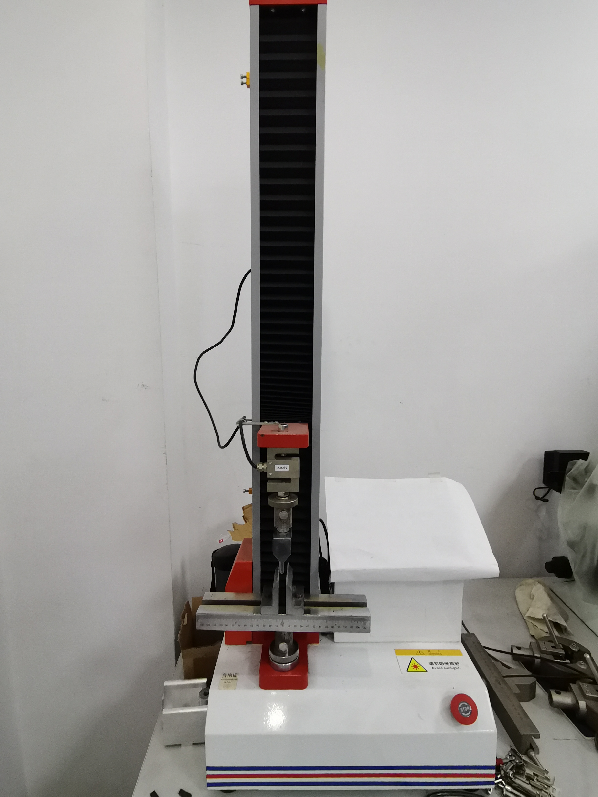
单臂材料试验机
二、设备操作流程
2.1 工具头与夹具
设备配有多套工具头，使用前需确认安装正确：
三点弯曲工具头（层间剪切试验用）：
上部：加载头
下部：带标尺的支撑座
此套工具较新，注意与形状相似但压头圆角半径不同的旧工具区分
三点弯曲工具头
拉伸夹持工具头（丝材拉伸试验用）：
上下两端均为带夹持功能的钳型工具
通过操作杆控制钳口开合
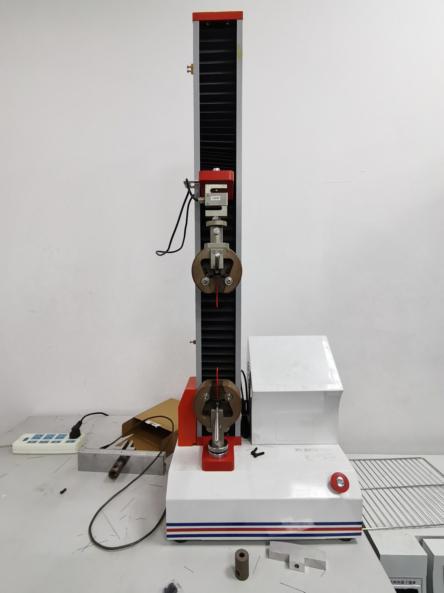
夹持工具头
2.2 开机与联机
第一步：开机与接线
将引出的连接线插入电脑 USB 口
打开试验机背面的电源开关
在电脑 设备管理器 中找到该 USB 端口对应的串口号（例如 COM3）
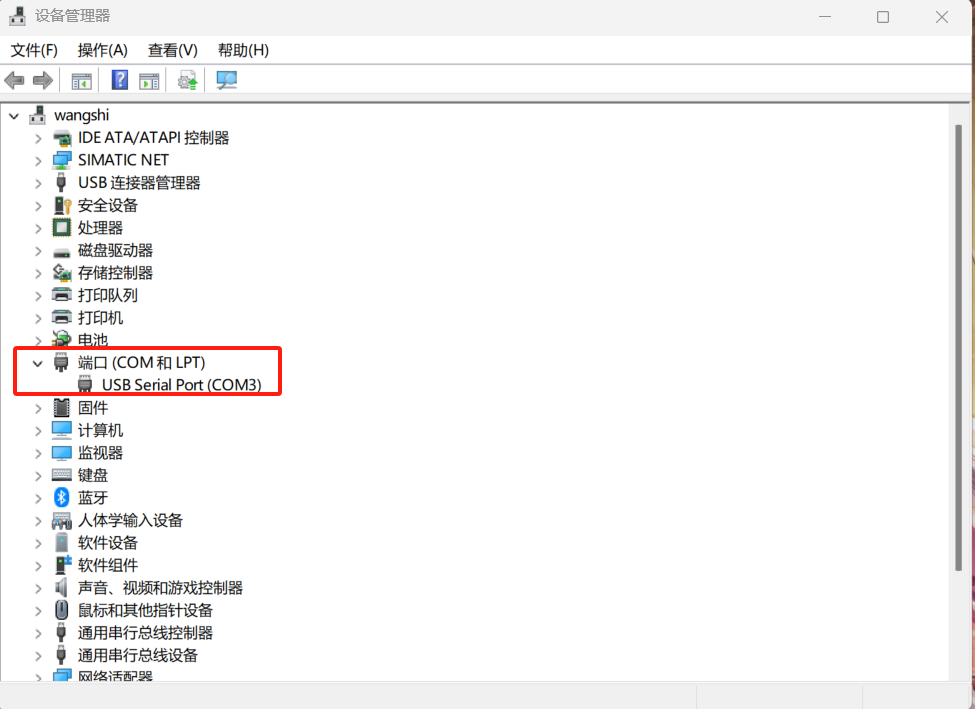
设备管理器界面
第二步：登录 iDearTest
双击 iDearTest.exe，进入登录界面，默认用户名与密码皆为 test。
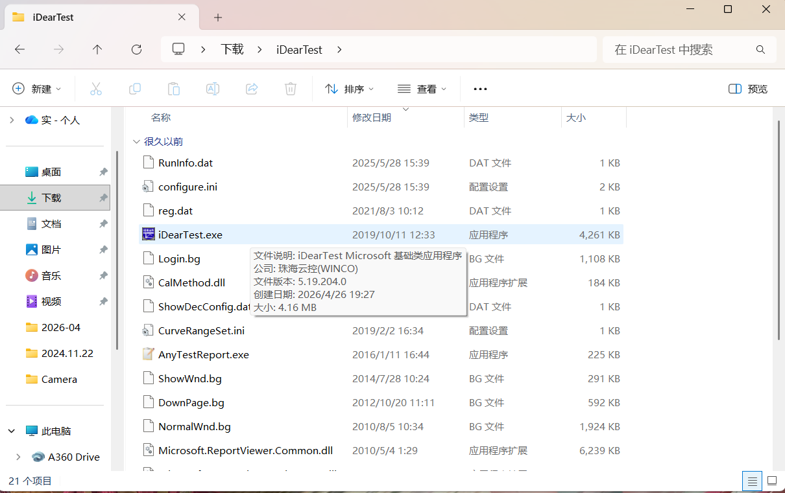
iDearTest测试软件
iDearTest登录界面
第三步：联机
登录后界面右上角显示"当前状态：脱机"
点击菜单栏 联机 → 弹出联机设备选择界面
将端口号选为设备管理器中查询到的端口号，点击确定
连接成功后右上角显示"当前状态：待机"，力与位移数值框出现读数
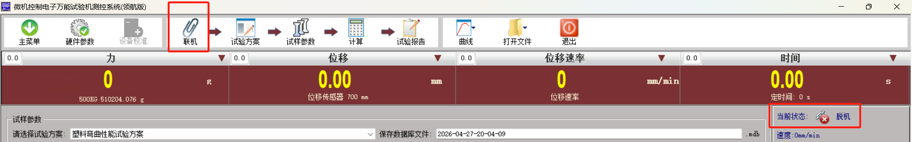
脱机界面
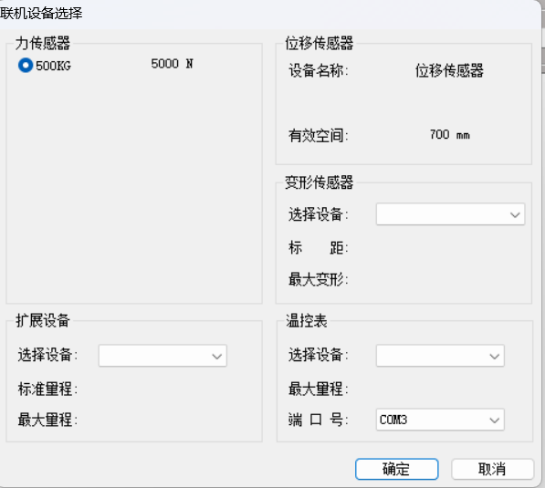
联机设备选择界面
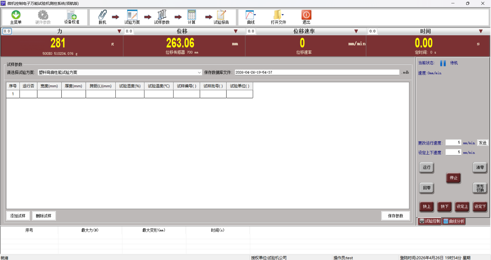
测试软件主界面
备注
USB 连接故障排除：该机器 USB 接口可能接触不良。若联机时弹出"请连接到控制板"，尝试以下措施： - 多次插拔 USB 线，或换插电脑其他 USB 口 - 重新打开软件后再点联机 - 先打开软件再插 USB，或先插 USB 再打开软件 - 若长时间尝试仍未成功，换一台电脑尝试
2.3 试验方案
点击菜单栏 试验方案 进行选择或自定义：
试验 |
方案名称 |
|---|---|
层间剪切 |
塑料弯曲性能试验方案 |
丝材拉伸 |
塑料拉伸性能试验方案 |
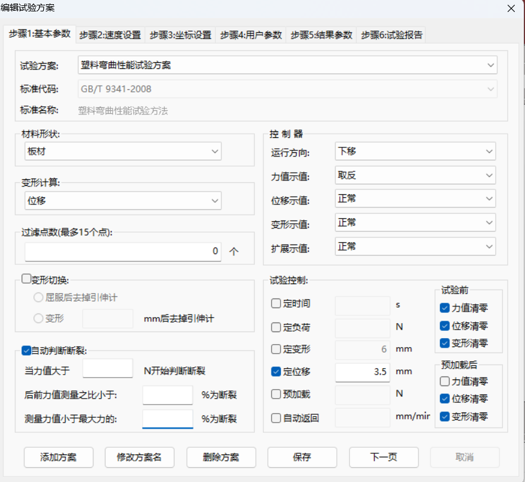
试验方案选择
自动判断断裂选项如未开启，可根据标准手动设置停止条件（弯曲试验可设置定位移 3.5mm）。该设置非必须，试验中也可手动点击停止。
2.4 开始实验
遥控器操作：
类型 |
按钮 |
行为 |
注意 |
|---|---|---|---|
保持型 |
上升、下降 |
按下持续动作，按停止才停 |
长距离移动谨防过快冲压/拉断试样 |
点动型 |
慢上、慢下、微上、微下 |
按下只动作一次，松手即复位 |
接近试样时用微上/微下精细调整 |
操作步骤：
将试样放置好后，点击力传感器数值框左上角的 "0.0" 图标清零
使用遥控器调整加载头位置，接近试样时用微调，至力值出现读数（一般 小于 1000 即可，单位为 g）
清零按钮
点击主界面右下方的 运行 按钮，试验机自动加载，软件切换到试验曲线界面
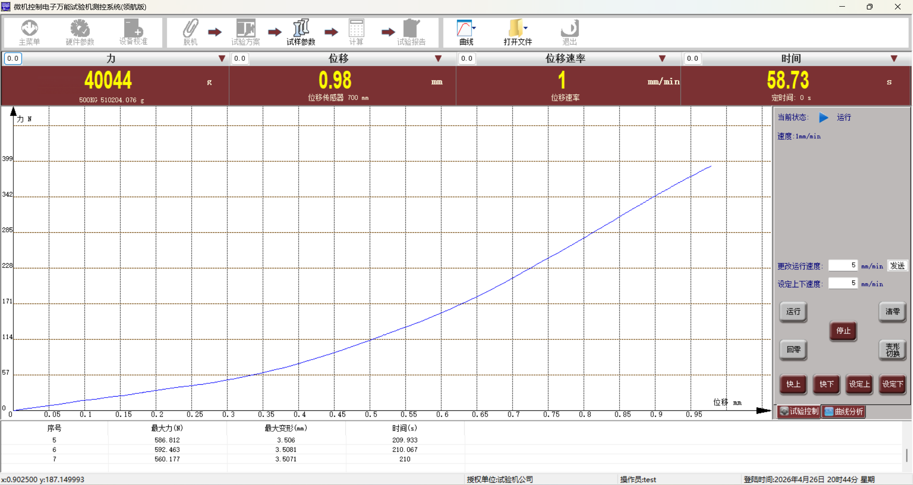
位移与力曲线
界面下方可直接查看每次试验的 最大力 与 最大变形。
2.5 数据处理
结果文件为 .mdb 格式，储存在 iDearTest\outputfile 路径下：
每 10 次试验归为一组，储存在一个 mdb 文件中
超过 10 次自动存入下一个 mdb 文件
每次重新打开软件也会生成新的 mdb 文件
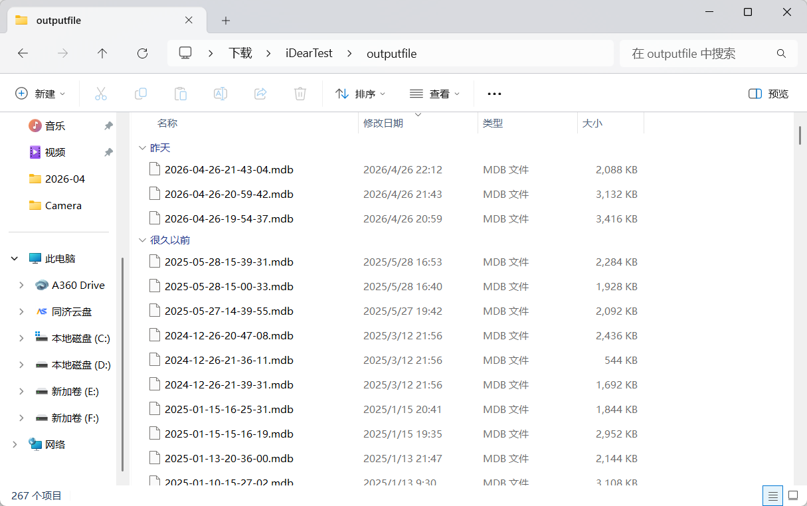
结果文件
处理步骤：
用 Access 软件打开
.mdb文件另存为
.xlsx格式的 Excel 文件用代码绘图并计算强度（参考附录的数据处理程序）
2.6 关机
关闭 iDearTest 软件
关闭试验机电源
清理桌面，工具归位
三、层间剪切试验（三点弯曲）
3.1 试验介绍
依据 ASTM_D2344 标准，测定高模量纤维增强聚合物基层压板的短梁强度。适用于连续或不连续纤维增强的聚合物基复合材料，材料弹性性能需关于梁纵轴均衡对称。
3.2 试样制备
试样尺寸：21mm × 7mm × 3.5mm
加载条件：跨距与厚度比 = 4，最小厚度 2mm
制备流程：
在 iFiber 中导入 105mm × 7mm × 3.5mm 的立方体模型
生成 Gcode，T300 打印机打印
在样条上画标记线，分为 5 段，每段 21mm
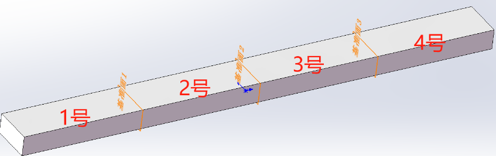
样条分割示意图
用台钳夹住样条，沿标记线用锯子锯断（保持水平、竖直）
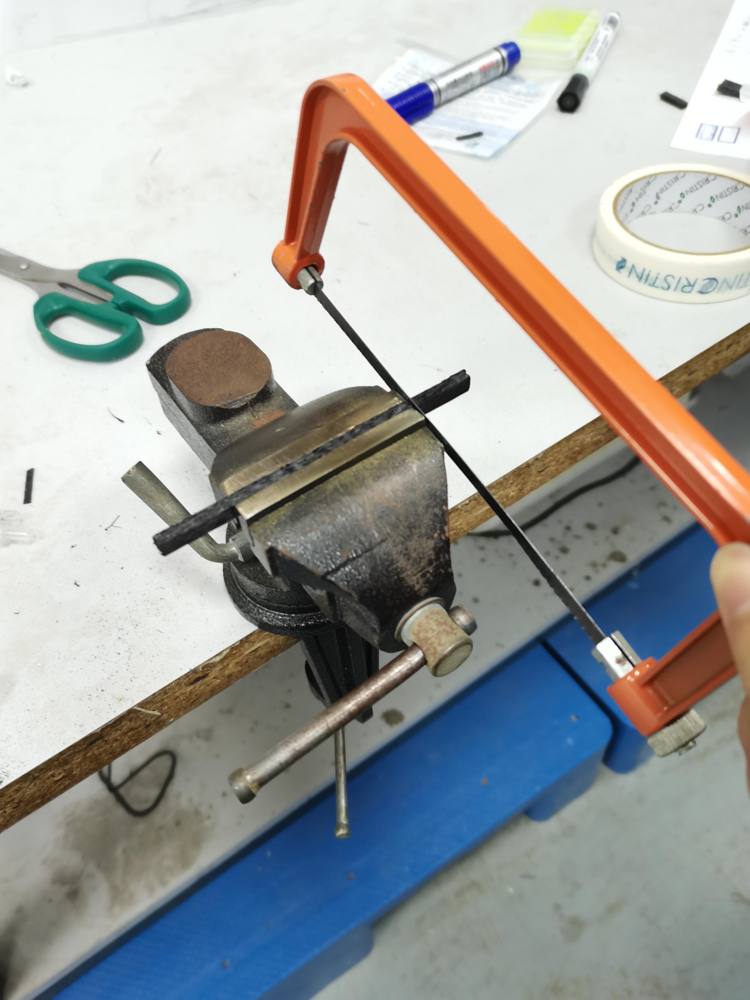
锯断样条
得 5 个 21mm 小样条，用美纹纸粘贴到 A4 纸上妥善保存
测量每个样条的实际长、宽、高
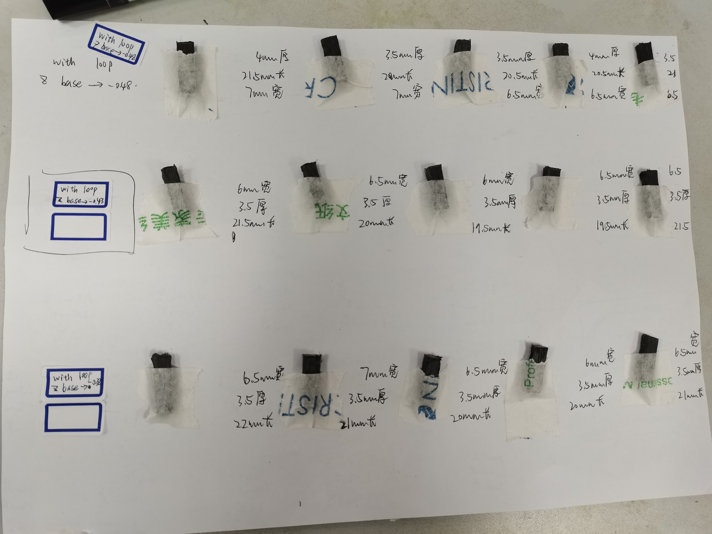
妥善保存样条并测量其尺寸
重要
若切片填充方式为 line，最后 21mm 为被动段打印（纤维由前面已粘接的纤维拖拽出来），性能上有差异。实际测试中通常只取前 4 段作为平行试验，最后 1 段若无特别需要应分开处理。
每种测试条件至少 5 个 样件。
3.3 工具头配置
安装三点弯曲工具头：
上部：加载头
下部：带标尺支撑座
调整跨距：
两个支撑块跨距 14mm
确保支撑块顶部圆角的 圆心 落在 7mm 刻度线上方（不是侧壁）
3.4 试验步骤
按第二章完成开机联机后，选择 塑料弯曲性能试验方案（方向下移，1mm/min）：
将试样 水平居中 放在支撑块上
力值清零
下降加载头至力值 ≤ 1000
点击 运行，位移达 3.5mm 时点击停止（或提前手动停止）
一般取第一个波峰的值作为结果
抬起加载头，取出试样
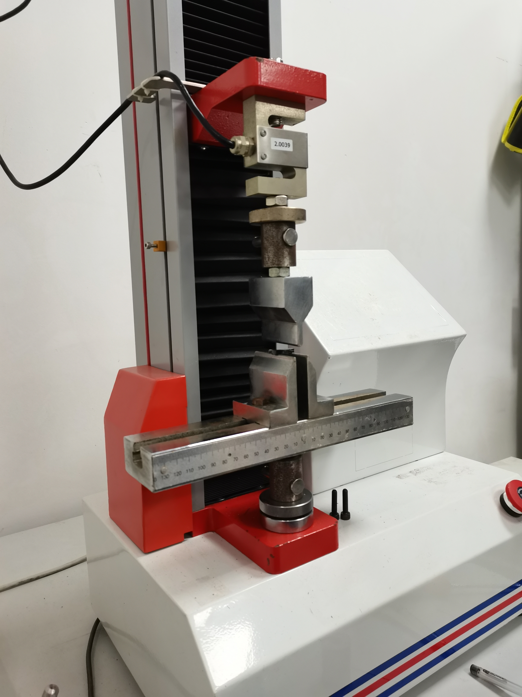
加载后取出试样
重复以上步骤进行下一试样
四、丝材拉伸试验
4.1 试验介绍
依据 ASTM_D4018 标准，测定碳纤维原丝的拉伸强度、拉伸模量和断裂伸长率。适用于树脂浸渍固结的连续长丝碳纤维、石墨纤维纱线、粗纱和丝束试样。
4.2 试样制备
有效拉伸段：150mm（两端各粘接固定 25mm）
端片（End Tab）尺寸：70mm × 30mm × 2mm
备注
若济事楼 148 未找到端片，可让同门用拓竹打印机打印。
制备流程：
将纤维浸入树脂槽，经辊压/模具使树脂均匀分布
将纤维丝切割为 200mm 长的单根试样（用钢尺量取，剪刀剪断）
每种测试条件至少 4 个 试样
粘接步骤：
在端片上 25mm 处画记号线与中垂线
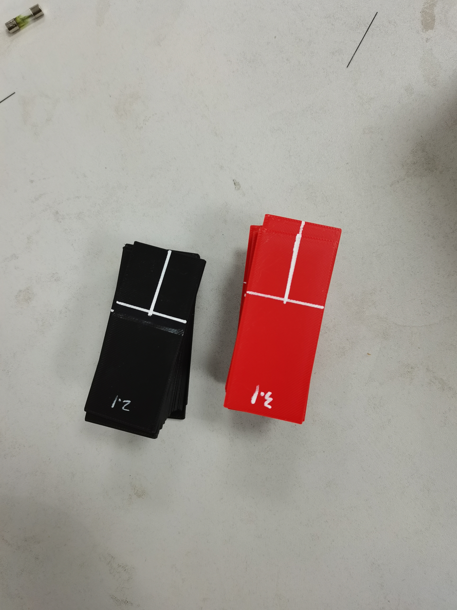
做好标记的端片
用美纹纸将试样两端初步固定在记号线交点处
在端片上喷底涂（晾晒一分钟）
沿丝材区域涂胶水（不宜过多，盖住丝材即可）
涂抹过程中保持丝材不偏离记号线，纤维维持自然长度不弯折
静置 24 小时 使胶水完全凝固
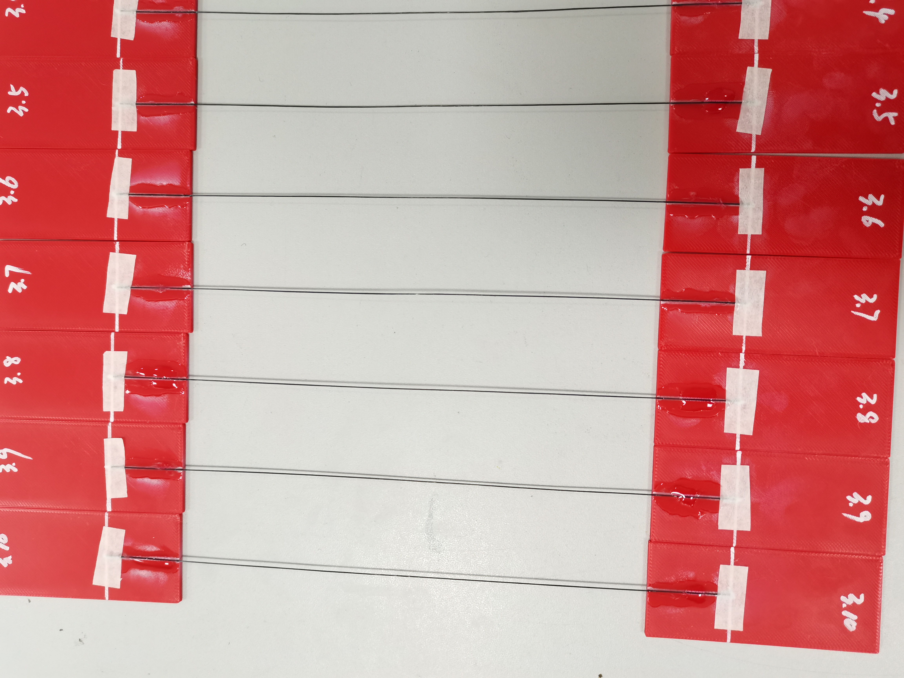
将试样粘接到端片上
4.3 工具头配置
安装拉伸夹持工具头：
上下两端均为钳型工具
通过操作杆控制钳口开合
确保夹具对中，两端片在同一竖直线上
4.4 试验步骤
按第二章完成开机联机后，选择 塑料拉伸性能试验方案（方向上移，1mm/min）：
降下工具头，使距离 略小于 丝材长度
打开钳口，夹住上下端片后端（记号线后未粘接丝材位置）
确保两端片在同一竖直线上
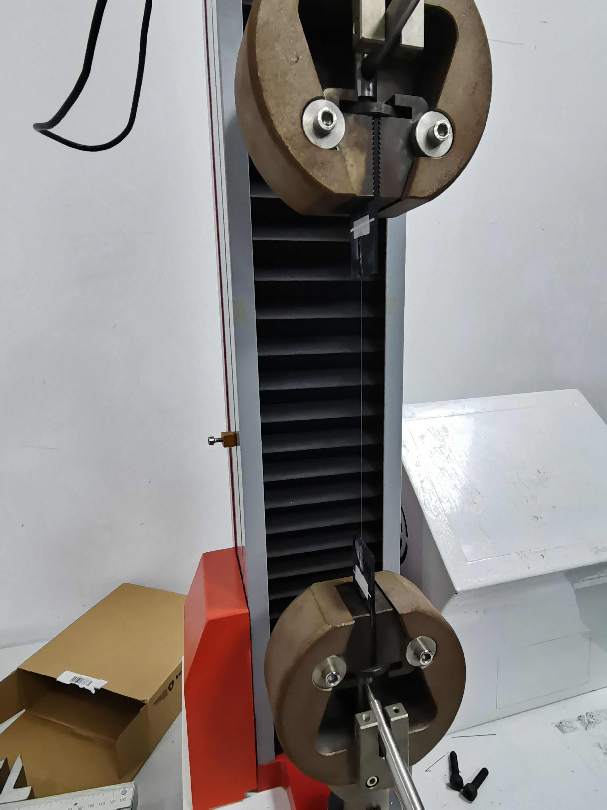
夹持端片以固定试样
夹持后丝材略有弯曲为正常现象
力值清零
缓慢抬升工具头至丝材近乎绷直，力值 ≤ 1000
点击 运行，拉断后试验自动结束
打开钳口取下端片
重复以上步骤进行下一试样
附录 数据处理程序
以上两项力学试验的结果文件都是 .mdb 格式，用 Access 转换为 .xlsx 后，可使用以下程序进行绘图并得出最大力值与对应位移。使用时按需修改输入/输出路径和坐标轴范围。
结果示例：
TestNo: 1, Max Load: 9357.08 N at Position: 3.73 m
TestNo: 2, Max Load: 4122.18 N at Position: 2.42 m
TestNo: 3, Max Load: 8469.51 N at Position: 3.73 m
TestNo: 4, Max Load: 9668.69 N at Position: 3.58 m
TestNo: 5, Max Load: 4255.90 N at Position: 2.11 m
TestNo: 6, Max Load: 6661.93 N at Position: 2.83 m
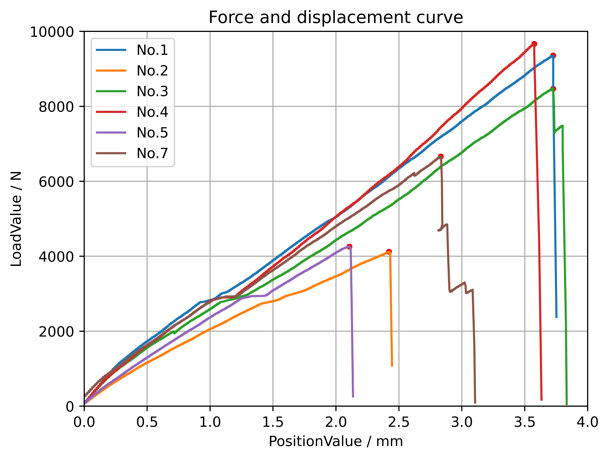
位移与力的折线图
程序主体（傅前亮提供）：
import pandas as pd
import matplotlib.pyplot as plt
# 读取Excel文件并选择前4列
path = 'drive/MyDrive/OriginalData1.xlsx'
df = pd.read_excel(path, sheet_name="OriginalData")
df = df.iloc[:, 1:5] # 从数据框中提取第2到第5列
# 查找 'TestNo' 列的最小值和最大值
testNoMin = df['TestNo'].min()
testNoMax = df['TestNo'].max()
# 根据 'TestNo' 分组数据
exp_df = df.groupby("TestNo")
# 设置图表参数
plt.figure(dpi=1080) # 设置图像的分辨率
rate = 1 # 采样率，1 表示使用全部数据
# 遍历每个分组并绘制数据
for name, group in exp_df:
exp_id = int(name)
if testNoMin <= exp_id <= testNoMax:
# 绘制折线图，显示全部数据
plt.plot(
group['PositionValue'][::rate], # 使用 PositionValue 列
group['LoadValue'][::rate], # 使用 LoadValue 列
label=f'No.{name-testNoMin+1}' # 为线条添加标签
)
# 找到 LoadValue 最大值的索引
max_index = group['LoadValue'].idxmax()
max_position = group['PositionValue'][max_index] # 对应的最大 PositionValue
max_load = group['LoadValue'][max_index] # 最大的 LoadValue 值
# 在最大值处添加标记
plt.scatter(
max_position,
max_load,
color='red',
marker='o',
s=10, # 标记大小
)
# 打印最大值信息
print(f'TestNo: {name}, Max Load: {max_load:.2f} N at Position: {max_position:.2f} m')
# 设置图表标题、标签和范围
plt.title('Force and displacement curve')
plt.xlabel('PositionValue / mm')
plt.ylabel('LoadValue / N')
plt.xlim(0, 4) # x轴范围
plt.ylim(0, 10000) # y轴范围
plt.legend(loc='upper left')
plt.grid(True)
# 保存并显示图表
plt.savefig('drive/MyDrive/al1l.png')
plt.show()